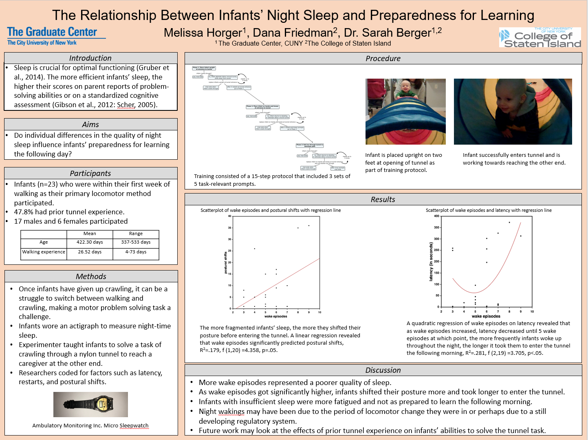
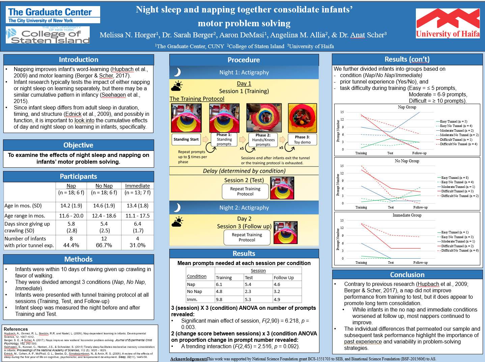
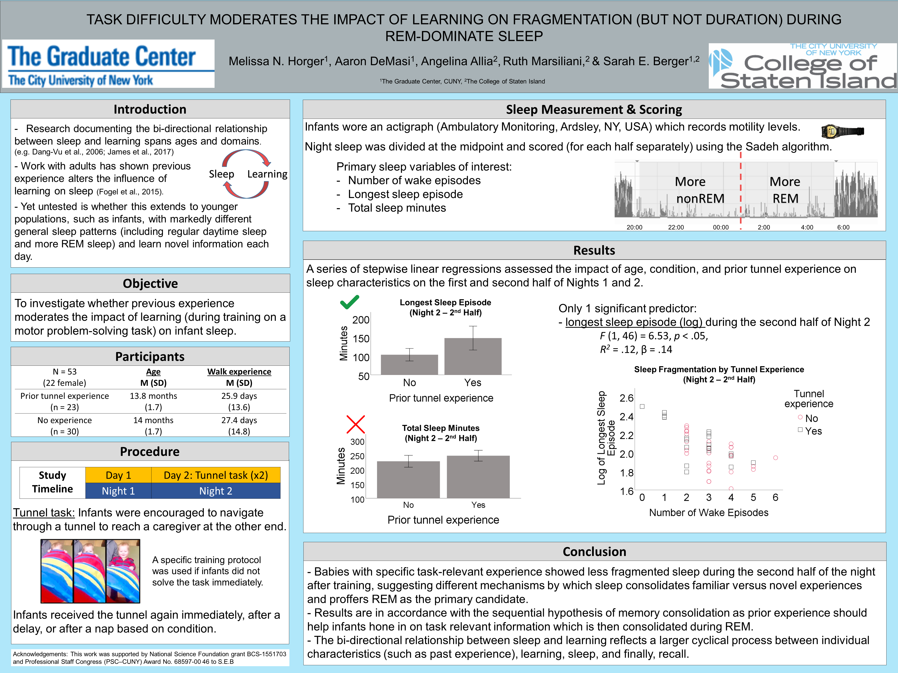

Research and publications
Motor experience and body representations
The development of grasping and later neural representation of fingers

A project through the Developmental Science Lab at Temple University is currently studying how infants learn to reach and grasp for a pencil from 6 to 14-months. We use a customized software (TrHandy, Ab.Acus) to code videos submitted by parents and can extract the kinematic properties of the reach and grasp. Of particular interest is the emergence of the mature pincer grasp. At 14-months, infants come to the lab and participate in a tactile oddball paradigm stimulating their fingertips while undergoing EEG. Of particular interest is a neural signature (somatosensory mismatch negativity - sMMN) in the frontocentral regions. We hypothesize that functional differences in the way infants use their pinky and middle fingers to grasp will relate to neural body representations, manifesting as greater sMMN in response to a tactile stimulation of the middle finger versus the pinky finger.
For more information - https://sites.temple.edu/devscilab/babygrasp/
Motor experience and neural plasticity in finger representations
A complimentary project with older participants also uses the tactile oddball paradigm and sMMN.Here, we hypothesize that neural plasticity persists into adulthood and motor experience can change the neural representation of digits. Undergraduates participate in a typing test, a traditional measure of finger independence, and complete questions about video game and music experience. We expect that more experience using individual fingers and greater finger independence will lead to greater sMMN in response to a tactile stimulation of the middle finger versus the pinky finger.

Cognitive and motor development and sleep
Cognition-action tradeoffs and the organization of attention
This chapter discusses what cognition–action trade-offs in infancy reveal about the organization and developmental trajectory of attention. We focus on internal attention because this aspect is most relevant to the immediate concerns of infancy, such as fluctuating levels of expertise, balancing multiple taxing skills simultaneously, learning how to control attention under variable conditions, and coordinating distinct psychological domains. Cognition–action trade-offs observed across the life span include perseveration during skill emergence, errors and inefficient strategies during decision making, and the allocation of resources when attention is taxed. An embodied cognitive-load account interprets these behavioral patterns as a result of limited attentional resources allocated across simultaneous, taxing task demands. For populations where motor errors could be costly, like infants and the elderly, attention is typically devoted to motor demands with errors occurring in the cognitive domain. In contrast, healthy young adults tend to preserve their cognitive performance by modifying their actions.
The impact of motor experience on exploration and problem solving
One hundred and six infants with varied independent walking experience faced the problem of navigating a tunnel to reach a caregiver. Solving the task required infants to switch from standing to crawling so they could fit their bodies into the tunnel. Spontaneous exploratory behaviors were documented. Infants who did not immediately go through the tunnel received a strict 15-step training protocol to highlight relevant details of the task. Age and walk experience were entered as predictors into a series of stepwise regressions on measures of exploratory and problem-solving behaviors. In general, older infants were more successful than younger infants in completing the task. A significant nonlinear relationship was documented between walk experience and some outcome measures. Infants with a moderate amount of walk experience had more difficulty than those with very little or a lot. Microgenetically documenting problem solving as a function of experience revealed that attention is taxed during mastery of a motor skill. Availability of attentional resources, in turn, impacted
Nap timing makes a difference: Sleeping sooner rather than later after learning improves infants’ locomotor problem solving
Twenty-nine newly-walking infants who had recently given up crawling trained to navigate a shoulder-height, nylon tunnel to reach a caregiver waiting at the other end. Infants in the Nap First group napped within 30 min of initial training. Infants in the Delay First group napped four hours after training. All infants were retested six hours after training on the same locomotor problem. Learning was measured by the number of training prompts required to solve the task, exploration, and time to solve the problem. Nap First infants benefited the most from a nap; they required fewer training prompts, used fewer posture shifts from training to test, and solved the task faster compared to Delay First infants, suggesting that optimally timed sleep does not merely protect against interference, but actively contributes to memory consolidation. This study highlights the importance of nap timing as a design feature and was a first step towards limit-testing the boundaries of the relation between sleep and learning. Infants’ fragile memories require regular consolidation with intermittent periods of sleep to prevent interference or forgetting.

Longitudinal assessment of sleep and motor milestone acquisition.
By using Nanit video baby monitors and parent reported motor skill diaries, we get a prospective glimpse into infants’ sleep around the acquisition of new motor skills.
In one investigation, Nanit provided nightly sleep summaries statistics including number of wake episodes, sleep efficiency, total sleep time, and sleep onset latency. We looked for patterns in the nights immediately before and after the acquisition of sitting, pulling to stand, hands-and-knees crawling, cruising, and walking.
In a second study, complete nights of video were state scored into REM, NREM, indeterminate sleep, and wake. We focused on the nights before, of, and after the onset of sitting, crawling, and walking.

Sleep in context
New in-home methods for studying sleep states in infancy
I developed a technique using wireless cardiorespiratory sensors and an actigraph to code infant sleep states. The procedure is easy enough for parents to incorporate into their usual bedtime routines. Parents and babies become part of the research team!
Parental Expectations and Infants’ Sleep during COVID-19
We are using a survey and still accepting responses! https://gccuny.az1.qualtrics.com/jfe/form/SV_1Mknip2xlCEntjv
Recent conference presentations


